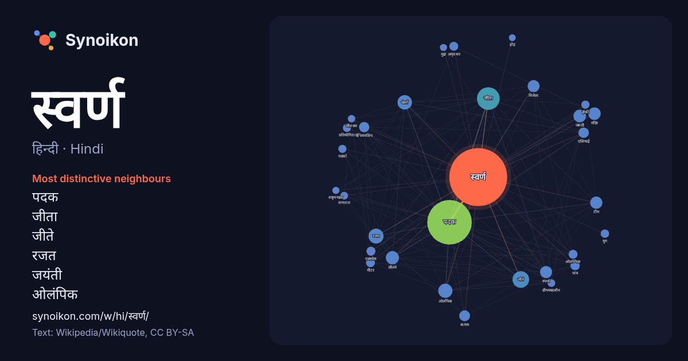

हिन्दी · Hindi · word of the day list
स्वर्ण
“gold” · The words found around it in 890 instances from Hindi Wikipedia, Wikiquote.

Most distinctive neighbours
- पदक 261×
- जीता 68×
- जीते 52×
- रजत 49×
- जयंती 37×
- ओलंपिक 36×
- खेलों 35×
- स्पर्धा 35×
- जीतने 34×
- विजेता 30×
- कांस्य 27×
- चैंपियनशिप 24×
- एशियाई 22×
- एक्स्प्रेस 21×
- अमृतसर 20×
- ओलम्पिक 19×
- पदकों 18×
- हॉकी 16×
- ग्रीष्मकालीन 14×
- जीतकर 14×
× = how many times more often than in general Hindi Wikipedia text.
Most frequent neighbours
- पदक 505
- जीता 131
- जीते 70
- रजत 57
- खेलों 53
- ओलंपिक 51
- जीतने 44
- भारत 42
- जयंती 40
- मंदिर 40
- टीम 38
- विजेता 37
- स्पर्धा 37
- भारतीय 36
- उन्होंने 35
- तीन 32
- कांस्य 30
- वाली 29
- एशियाई 28
- चैंपियनशिप 27
In context
- दो प्रतिशत स्वर्ण प्राप्त होता है। मैसूर की कोलार की खानों से यह सोना निकाला जाता है। कोलार में स्वर्ण की 5 खानें हैं। इन खानों से स्वर्ण पारद के साथ Wikipedia snippets · सोना
- के साथ संयोजन में एक ख़ास परिसंचारी स्वर्ण मुद्रा के मामले में मूल्य की इकाई परिभाषित होती है। इसी प्रकार, स्वर्ण विनिमय मानक में आमतौर पर सिर्फ चांदी Wikipedia snippets · स्वर्ण मान
- झारखण्ड स्वर्ण 2873 भारतीय रेल द्वारा संचालित एक मेल एक्स्प्रेस ट्रेन है। यह ट्रेन हटिया रेलवे स्टेशन (स्टेशन कोड:HTE) से 01:40PM बजे छूटती है और पुरानी Wikipedia snippets · झारखण्ड स्वर्ण जयंती 2873
- झारखण्ड स्वर्ण 2874 भारतीय रेल द्वारा संचालित एक मेल एक्स्प्रेस ट्रेन है। यह ट्रेन पुरानी दिल्ली रेलवे स्टेशन (स्टेशन कोड:DLI) से 07:40PM बजे छूटती है Wikipedia snippets · झारखण्ड स्वर्ण जयंती 2874
- झारखण्ड स्वर्ण 2817 भारतीय रेल द्वारा संचालित एक मेल एक्स्प्रेस ट्रेन है। यह ट्रेन हटिया रेलवे स्टेशन (स्टेशन कोड:HTE) से 02:45PM बजे छूटती है और पुरानी Wikipedia snippets · झारखण्ड स्वर्ण जयंती 2817
- झारखण्ड स्वर्ण 2818 भारतीय रेल द्वारा संचालित एक मेल एक्स्प्रेस ट्रेन है। यह ट्रेन पुरानी दिल्ली रेलवे स्टेशन (स्टेशन कोड:DLI) से 07:40PM बजे छूटती है Wikipedia snippets · झारखण्ड स्वर्ण जयंती 2818
- स्वर्ण जयंती एक्स्प्रेस 2804 भारतीय रेल द्वारा संचालित एक मेल एक्स्प्रेस ट्रेन है। यह ट्रेन ह निजामुद्दीन रेलवे स्टेशन (स्टेशन कोड:NZM) से 05:55AM बजे Wikipedia snippets · स्वर्ण जयंती एक्स्प्रेस २८०४
- स्वर्ण जयंती एक्स्प्रेस 2803 भारतीय रेल द्वारा संचालित एक मेल एक्स्प्रेस ट्रेन है। यह ट्रेन विशाखापट्टनम रेलवे स्टेशन (स्टेशन कोड:VSKP) से 08:30AM बजे Wikipedia snippets · स्वर्ण जयंती एक्स्प्रेस २८०३
More Hindi words
- इतिहास
- ईश्वर
- कार्य
- कुत्ता
- गर्मी
- गाना
- घंटी
- घड़ी
- घोड़ा
- चाय
- चित्रकला
- छाया
- जंगल
- जलवायु
- जीवन
- तूफ़ान
- दर्पण
- द्वीप
- नक्षत्र
- नमक
- परिवार
- पहाड़
- पानी
- पैसा
- प्रकृति
- बगीचा
- बिल्ली
- भाषा
- भोजन
- माता
- मानचित्र
- मृत्यु
- मौन
- रेगिस्तान
- रेलगाड़ी
- रोटी
- वर्षा
- विज्ञान
- शक्ति
- शरद
- शहद
- शहर
- सड़क
- सत्य
- समय
- सर्दी
- सेतु
- स्वास्थ्य
- हृदय
Precomputed on 2026-10-09 with default settings (±5 words, medium corpus). The interactive map can refresh it with live data.